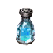
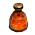

Большая Фляга Ловкости
Предметы / Фляги и зелья
Открыть в интерактивной вики →
| Вес | 1 |
|---|---|
| Цена | 5 000 |
Описание
Бутылка содержит специальное вещество, способное улучшить снаряжение VII - IX рангов. Процесс требует дополнительного Ингибитора.
Общий вес итемов на 1хБольшая Фляга Ловкости: 76
Общий вес итемов на 1х
Большая Фляга Ловкости: 76| Бутылка с особым веществом, способным улучшить снаряжение ранга VII–IX. Процесс дополнительно требует ингибитора. |
Рецепт
Создание: 1x  Шип Драконьего Слуги + 2k
Шип Драконьего Слуги + 2k

Средняя Фляга Ловкости + 2x
Лава из Кеменака + 5xШип Драконьего Слуги + 2kГде создать

Изготовление
Изготавливает Первый Жрец в Святилище Камня за 2 000 золота после доставки ингредиентов:
|